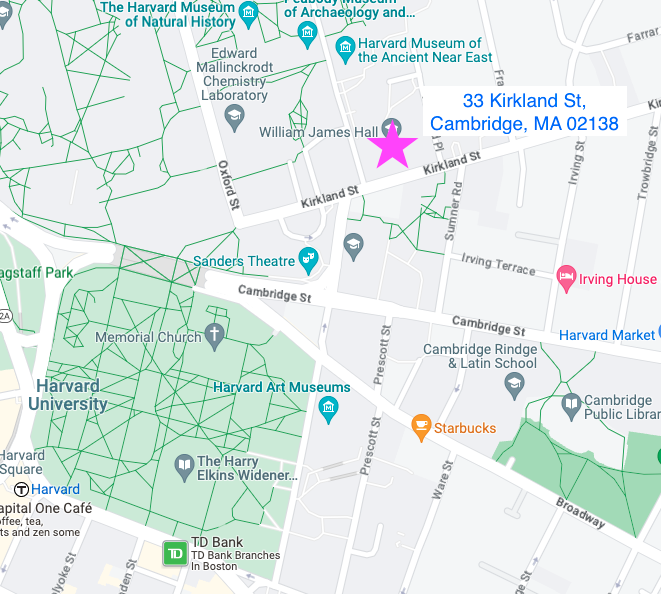

<div class="container" id="main">
 <!-- Content -->
 <article class="box page-content">
  <header>
   <h2>
    How to get to the Bergelson Lab
   </h2>
  </header>
  We're situated in the William James Hall building at 33 Kirkland St, Cambridge, MA 02138.
				Here is
  <a href="https://goo.gl/maps/H1ufvaqJ6FiNeLEh7">
   the building on Google Maps
  </a>
  .
				If driving, a researcher will greet you in the parking lot behind the building.
				If not, use the main entrance on Kirkland St and head to the 11th floor via the elevator.
				Upon reaching the 11th floor, proceed through the glass doors and settle in the waiting area.
				A researcher will join you shortly.
  <br/>
  <br/>
  
 </article>
</div>
